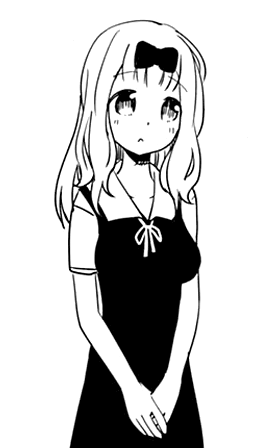

Chika Fujiwara (藤原 千花ふじわら ちか, Fujiwara Chika) is one of the protagonists in the Kaguya-sama wa Kokurasetai series. She was a third-year high school student at Shuchi'in Academy, a member of the Tabletop Gaming Club and the secretary of the 67th and 68th Student Council.
| Chika Fujiwara | |
|---|---|
| Manga | Anime |
|  | |
| Profile | |
| Age | 17 |
| Birthday | 3 March |
| Gender | Female |
| Eye Color | Blue |
| Hair Color | Pink |
| Height | 154 cm |
| Personal Status | |
| Occupation | High School Student
Student Council Secretary |
| Grade | Senior (3-A) |
| Portrayal | |
| Japanese VA | Konomi Kohara |
| English VA | Jad Saxton |
| Debut | |
| Manga | Chapter 1 |
| Anime | Episode 1 |
Chika is based on Kuramochi no Miko (車持 皇子), the second suitor from The Tale of the Bamboo Cutter, who was tasked with finding the Jeweled Branch from Hourai. Kuramochi no Miko is generally considered to be based on Fujiwara no Fuhito (藤原 不比等) whose mother's maiden name was kuruma ji (車持).
Chika's habit of cheating during games is based on the fact that her counterpart attempted to present Princess Kaguya with a forgery. Everyone in her family has plant-based names that reference the branch in some way.
Chika's surname "Fujiwara" is based on the actual real-life Fujiwara clan who were important figures in Japanese Politics throughout history.
Chika is a cute fair-skinned young girl with shoulder-length silver hair (light pink in the anime) that has a black bow in the middle of her square bangs, blue eyes. She sometimes ties her hair in a slightly high ponytail.
She is usually dressed in a Shuchi'in Academy high school uniform.
Chika is a bubbly, eccentric girl who almost always has a smile on her face. Always looking to have fun with her fellow student council members, she is often the one to come up with strange activities and ideas that entertain herself and the others. She is mostly oblivious to the atmosphere of the room, resulting in her being an unpredictable element that ruins many of Kaguya Shinomiya's and Miyuki Shirogane's schemes to make the other confess, and Ai Hayasaka as Chika is a threat to her tasks.
Because of her lax attitude and childish antics, many of the council members seem to view her as simple-minded, especially Kaguya. Ironically, Chika is actually quite talented in a variety of areas, being an accomplished pianist while also speaking 5 languages. She can also be quite devious and underhanded, often attempting to cheat in a lot of the games she comes up with, though is exposed every time.
Chika is obsessed with anything that has to do with love, professing herself as a “love detective” and giving relationship advice to others (despite having never had a boyfriend before). She can be oddly perceptive at times, regarding Yu Ishigami's and Miko Iino's respective feelings, but is simultaneously oblivious to Kaguya and Shirogane's relationship.
The final omake chapter even directly calls her dumb, at the same time explaining that high intelligence can lead to suffering, while dumbness can allow a person to be happier and sincerely enjoy life.
Chika is the middle child of a family of politicians. Her great-grandfather was once the prime minister, and her uncle is the current minister of the right, making her lineage one of extreme prestige. While her family is overprotective of her, she was raised in a loving environment and has grown into a truly kind girl. However, since forms of recreation such as video games and otherworldly items were forbidden to her, she sought other means of escape and has developed many deep and unusual hobbies.
She is fond of German analog games, puzzles, and various other subcultures far removed from what one would consider mainstream. She hates lying, but when playing games such as Werewolf or Poker, she reveals a hidden side of herself and bluffs like there's no tomorrow. She has been friends with Kaguya Shinomiya since middle school, she has often stayed the night at her house. However, their closeness isn't obvious to others because of Kaguya's personality.
In chapter 222 of the manga, Chika reveals that she played piano because she wanted to be perfect, and she becomes a prodigy at the piano. The expectations of her family and her fans rose, forcing her to practice more. She quit piano after Kaguya told her to just quit if she didn't like the piano. Soon after, Chika challenged Kaguya to a game battle and if she won, she would get to become Kaguya's friend. In the end, she becomes Kaguya's first friend.
Although the flashword suggests that Chika has become her father's political aide and is forced to endure replenishing her lack of teenage joys Hayasaka as a freeloader in her home, the epilogue as a whole provides little accurate information about her future after the story's conclusion. Instead, Aka announces that Chika didn't fall in love with anyone because all along she was "everyone's heroine" who made the lives of those around her brighter and happier. Following Japanese media terminology, this means that Fujiwara, at least at the time of the manga, was supposed to serve as a kind of platonic object of admiration and "idol" for all characters and fans.
The name Chika means "thousand" (千) and "flower, blossom" (花) (ka). Chika's surname Fujiwara means "wisteria" (藤) (fuji) and "field, plain" (原) (hara/wara)